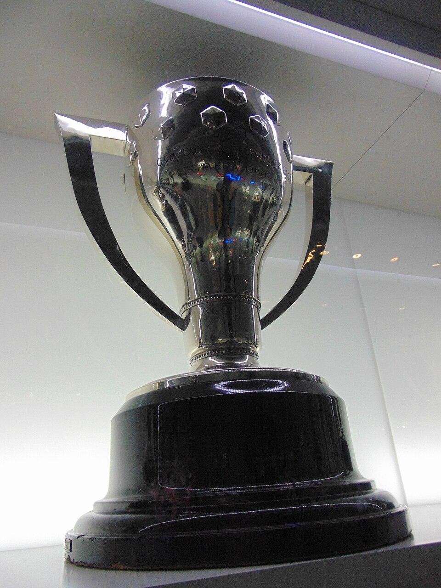

A LaLiga não se transformou em uma das competições mais admiradas do planeta apenas pela quantidade de estrelas que passaram por seus gramados. A força do Campeonato Espanhol nasce da combinação entre tradição, rivalidades históricas, escolas de jogo, clubes de alcance global e um ambiente cultural no qual o futebol frequentemente representa cidades, regiões e diferentes formas de pertencimento.
Real Madrid e Barcelona concentram a maior parte dos títulos e da atenção internacional, mas a história da liga não pode ser reduzida aos dois gigantes. Outros clubes também conquistaram o campeonato e deixaram marcas profundas em diferentes períodos.
A competição ainda possui uma ligação especial com o futebol europeu. Os clubes espanhóis construíram algumas das maiores dinastias continentais, desenvolveram gerações de jogadores e ajudaram a transformar LaLiga em uma marca acompanhada em praticamente todos os grandes mercados esportivos.
Como nasceu
O Campeonato Espanhol começou na temporada 1928/29. A edição inaugural reuniu dez clubes e adotou o sistema de pontos corridos com partidas de ida e volta.
Os participantes da primeira temporada foram:
- Barcelona
- Real Madrid
- Athletic Bilbao
- Real Sociedad
- Arenas de Getxo
- Atlético de Madrid
- Espanyol
- Europa
- Real Unión
- Racing de Santander
Barcelona e Real Madrid terminaram empatados em pontos, mas o clube catalão ficou com o título pelos critérios previstos no regulamento. A conquista foi confirmada depois de uma vitória do Barcelona por 2 a 0 sobre o Arenas de Getxo e da derrota do Real Madrid para o Athletic Bilbao na rodada final, já na primeira edição, mostrando o que se tornaria uma das maiores rivalidade do esporte no planeta.
A criação da liga nacional permitiu que os principais clubes espanhóis passassem a disputar uma competição contínua. Até então, a Copa do Rei ocupava o centro do calendário nacional, enquanto torneios regionais tinham enorme importância na formação das rivalidades.
A Guerra Civil Espanhola interrompeu o campeonato entre 1936 e 1939. Depois da retomada, a liga passou por diferentes ampliações até chegar ao modelo atual com 20 participantes.
Como funciona a competição
A primeira divisão espanhola é disputada por 20 clubes. Cada equipe enfrenta os outros 19 adversários duas vezes, uma como mandante e outra como visitante.
Os três últimos colocados são rebaixados para a segunda divisão e substituídos pelos dois primeiros colocados da LaLiga 2 e pelo vencedor dos playoffs de acesso.
O sistema de acesso e rebaixamento mantém a ligação entre a elite e o restante da pirâmide espanhola. A movimentação mais recente entre as divisões também pode ser acompanhada na matéria sobre os times rebaixados e promovidos para a temporada 2026/27.
A taça do Campeonato Espanhol
O troféu entregue ao campeão da LaLiga possui um desenho bem diferente dos troféus mais modernos do futebol europeu. A peça preserva uma estética clássica, com duas grandes alças laterais, corpo prateado e uma base na qual são gravados o nome do vencedor e a temporada da conquista.
O modelo atual tem origem na década de 1940. A fabricação é realizada pela Joyería Alegre desde 1949, mantendo uma tradição artesanal ligada à história da competição.
Características da taça:
- Produzida em prata de lei
- Aproximadamente 18 quilos
- Cerca de 65 centímetros de altura
- Aproximadamente 60 centímetros de largura
- Duas grandes alças laterais
- Escudo da Federação Espanhola no corpo
- Nome do campeão gravado na base
A principal alteração estrutural aconteceu em 1980/81, quando a base foi modificada para comportar novas gravações. Mesmo com mudanças pontuais, o troféu manteve a aparência tradicional que o diferencia das peças adotadas por outras grandes ligas europeias.
Os maiores campeões
Somente nove clubes conquistaram o Campeonato Espanhol desde a temporada inaugural de 1928/29. Real Madrid e Barcelona aparecem muito à frente, enquanto o Atlético de Madrid ocupa a terceira posição.
- Real Madrid — 36 títulos
- Barcelona — 29 títulos
- Atlético de Madrid — 11 títulos
- Athletic Bilbao — 8 títulos
- Valencia — 6 títulos
- Real Sociedad — 2 títulos
- Deportivo La Coruña — 1 título
- Sevilla — 1 título
- Real Betis — 1 título
- Atual campeão: Barcelona, vencedor da temporada 2025/26
A diferença entre os dois primeiros mostra o peso da rivalidade na construção do campeonato. Real Madrid e Barcelona somam juntos 65 títulos, número muito superior ao total conquistado pelos outros sete campeões.
Barcelona foi campeão da LaLiga em 2025/26
O clube Catalão conquistou seu 29º título espanhol na útima temporada. A confirmação veio em 10 de maio de 2026, com uma vitória por 2 a 0 sobre o Real Madrid, resultado que deu ao clube catalão o segundo campeonato consecutivo.
Marcus Rashford e Ferran Torres marcaram os gols do título. Além de confirmar a conquista diante do principal rival, o resultado reforçou o domínio do Barcelona nos confrontos diretos daquela temporada.
A equipe comandada por Hansi Flick terminou o campeonato com 94 pontos e 95 gols marcados. O Barcelona também se tornou o primeiro clube a vencer todas as 19 partidas como mandante em uma edição de 38 rodadas da LaLiga.
Lamine Yamal foi eleito o melhor jogador da temporada depois de participar diretamente de 28 gols, com 16 bolas na rede e 12 assistências. Flick recebeu o prêmio de melhor treinador da competição.
O maior domínio da liga
O Real Madrid é o maior campeão da história da LaLiga, o clube venceu em diferentes períodos, com gerações que combinaram jogadores espanhóis, estrelas internacionais e uma estrutura esportiva construída para disputar títulos todos os anos.
A primeira conquista veio em 1931/32. O Real repetiu o título na temporada seguinte, iniciando uma trajetória que cresceria principalmente a partir da década de 1950.
O período de maior domínio nacional ocorreu entre os anos 1960 e 1980. Com nomes como Alfredo Di Stéfano, Ferenc Puskás, Paco Gento, Amancio Amaro, Pirri, Santillana, José Antonio Camacho, Emilio Butragueño e Hugo Sánchez, o clube acumulou campeonatos e consolidou a imagem de potência espanhola.
Entre 1960/61 e 1968/69, o Real Madrid conquistou oito das nove edições disputadas. Décadas depois, voltou a vencer cinco temporadas consecutivas entre 1985/86 e 1989/90, durante a era da Quinta del Buitre.
A força do clube também está ligada ao Santiago Bernabéu, estádio que acompanhou diferentes ciclos vitoriosos.
Barcelona, identidade e diferentes eras vencedoras
O clube Catalão ocupa a segunda posição entre os maiores campeões. O primeiro troféu veio justamente na edição inaugural de 1928/29.
O clube construiu diferentes gerações vencedoras. Johan Cruyff teve importância em duas delas: primeiro como jogador, no título de 1973/74, e depois como treinador do Dream Team, que conquistou quatro campeonatos consecutivos entre 1990/91 e 1993/94.
A partir dos anos 2000, o Barcelona viveu outra fase histórica. Ronaldinho Gaúcho liderou a reconstrução que resultou nos títulos de 2004/05 e 2005/06. Depois, Pep Guardiola comandou um time formado por Lionel Messi, Xavi, Andrés Iniesta, Carles Puyol, Sergio Busquets, Gerard Piqué e outros jogadores desenvolvidos no próprio clube.
O Barcelona de Guardiola venceu três edições em quatro temporadas:
- 2008/09
- 2009/10
- 2010/11
Lionel Messi se tornou o maior artilheiro da história do campeonato e o principal símbolo do período mais vitorioso do clube. O argentino combinou produção individual, regularidade e participação direta em dez títulos espanhóis.
A ligação entre essas equipes vencedoras também se conecta com o estádio catalão na figura do Camp Nou.
O desafiante da dupla dominante
O Atlético de Madrid é o terceiro maior campeão. O clube ocupa um espaço particular na LaLiga por representar a principal força capaz de interromper o domínio de Real Madrid e Barcelona em diferentes períodos.
Os títulos:
- 1939/40
- 1940/41
- 1949/50
- 1950/51
- 1965/66
- 1969/70
- 1972/73
- 1976/77
- 1995/96
- 2013/14
- 2020/21
A conquista de 1995/96 ficou conhecida pela dobradinha nacional. Sob o comando de Radomir Antić, o Atlético venceu LaLiga e Copa do Rei com jogadores como Diego Simeone, José Luis Caminero, Kiko e Milinko Pantić.
Simeone voltaria ao clube como treinador e lideraria os títulos de 2013/14 e 2020/21. O argentino construiu uma equipe marcada por intensidade, organização defensiva, competitividade e capacidade de disputar em condições financeiras inferiores às dos dois maiores rivais.
O campeonato de 2013/14 foi confirmado com um empate diante do Barcelona no Camp Nou, na última rodada. Já a conquista de 2020/21 terminou com vitória sobre o Valladolid, também no encerramento da competição.
Uma identidade única
O Athletic Bilbao ocupa a quarta posição no ranking histórico. O clube conquistou campeonatos em diferentes fases, com destaque para as décadas de 1930 e 1980.
Títulos:
- 1929/30
- 1930/31
- 1933/34
- 1935/36
- 1942/43
- 1955/56
- 1982/83
- 1983/84
O Athletic preserva uma política esportiva singular: seu elenco é formado por jogadores nascidos ou desenvolvidos futebolisticamente no País Basco e em áreas ligadas à cultura basca.
Essa escolha limita o mercado de contratações, mas fortalece a ligação entre clube, academia e território. Mesmo com essa política, o Athletic nunca foi rebaixado da primeira divisão, marca compartilhada apenas com Real Madrid e Barcelona.
Valencia e os títulos de diferentes gerações
A equipe viveu sua fase mais recente de domínio sob o comando de Rafael Benítez. O clube conquistou dois campeonatos em três temporadas, quebrando o protagonismo dos dois gigantes.
Os títulos:
- 1941/42
- 1943/44
- 1946/47
- 1970/71
- 2001/02
- 2003/04
O título de 2001/02 teve como base a organização defensiva e o equilíbrio coletivo. Em 2003/04, o clube voltou ao topo e ainda conquistou a Copa da Uefa, completando uma das maiores temporadas de sua história.
Jogadores como Santiago Cañizares, Roberto Ayala, David Albelda, Rubén Baraja, Pablo Aimar, Vicente e Mista foram protagonistas daquele ciclo.
Demais clubes que entraram na história campeã
A Real Sociedad conquistou dois títulos consecutivos, em 1980/81 e 1981/82. A equipe representou a força do futebol basco em um período no qual o Athletic Bilbao também voltaria ao topo pouco depois.
O Deportivo La Coruña foi campeão em 1999/2000. O chamado Superdépor reunia nomes como Djalminha, Mauro Silva, Roy Makaay, Fran González, Donato e Noureddine Naybet. A conquista transformou o clube da Galícia em um dos campeões mais simbólicos da era moderna.
O Sevilla possui um título, conquistado em 1945/46. O clube se tornaria mais conhecido internacionalmente décadas depois, principalmente pelo domínio construído na Copa da Uefa e na Europa League.
O Real Betis também venceu uma vez, em 1934/35. A campanha permanece como o maior título nacional da história do clube e reforça o peso do futebol de Sevilha dentro da tradição espanhola.
Os campeões mais recentes da LaLiga
Apesar da concentração histórica em Real Madrid e Barcelona, o Atlético conseguiu interromper a dupla no início da década de 2020.
Campeões recentes:
- 2020/21 — Atlético de Madrid
- 2021/22 — Real Madrid
- 2022/23 — Barcelona
- 2023/24 — Real Madrid
- 2024/25 — Barcelona
- 2025/26 — Barcelona
A sequência mostra três campeões diferentes em seis temporadas, mas também confirma a dificuldade enfrentada pelos clubes de fora do principal trio.
Os técnicos mais vitoriosos
A história do Campeonato Espanhol também foi marcada por treinadores capazes de construir equipes dominantes e atravessar diferentes gerações.
Miguel Muñoz é o técnico com mais títulos consquistados. Ex-jogador do Real Madrid, ele assumiu o comando da equipe em 1960 e liderou nove conquistas nacionais.
Técnicos com mais títulos:
- Miguel Muñoz — 9 títulos
- Enrique Fernández — 4 títulos
- Helenio Herrera — 4 títulos
- Johan Cruyff — 4 títulos
- Ferdinand Daučík — 3 títulos
- Luis Molowny — 3 títulos
- Leo Beenhakker — 3 títulos
- Pep Guardiola — 3 títulos
Muñoz venceu todas as nove edições pelo Real Madrid. Cruyff conquistou quatro títulos consecutivos com o Barcelona, enquanto Guardiola levantou três troféus em quatro temporadas.
Helenio Herrera foi campeão por Atlético de Madrid e Barcelona. Enrique Fernández venceu com Barcelona e Real Madrid, mostrando capacidade de triunfar nos dois lados da maior rivalidade do país.
El Clásico e a rivalidade que ganhou o mundo
Nenhum confronto representa melhor a projeção da LaLiga do que Real Madrid x Barcelona. O El Clásico reúne os dois maiores campeões, alguns dos maiores jogadores da história e um peso cultural que ultrapassa os resultados.
O primeiro encontro entre os clubes pela liga aconteceu em 17 de fevereiro de 1929. O Real Madrid venceu por 2 a 1 no estádio Les Corts. No segundo turno, o Barcelona ganhou por 1 a 0 em Madri.
Ao longo das décadas, o confronto reuniu nomes como Alfredo Di Stéfano, Ferenc Puskás, Paco Gento, Johan Cruyff, Diego Maradona, Hugo Sánchez, Romário, Ronaldo, Ronaldinho, Zinedine Zidane, Cristiano Ronaldo, Lionel Messi, Xavi, Andrés Iniesta, Karim Benzema e Luka Modrić.
Até o encerramento da temporada 2025/26, os clubes haviam disputado 192 partidas pela LaLiga. O Real Madrid tinha 80 vitórias, o Barcelona 77 e ocorreram 35 empates.
A dimensão cultural da rivalidade
El Clásico também ganhou força pelo que Real Madrid e Barcelona passaram a representar na sociedade espanhola.
O Barcelona possui uma ligação histórica com a identidade catalã. A expressão “Més que un club”, ou “Mais que um clube”, resume a forma como a instituição se apresenta como elemento esportivo, social e cultural da Catalunha.
O Real Madrid está ligado à capital e à centralidade política, econômica e institucional do país. Em diferentes momentos, essa posição alimentou interpretações sobre uma oposição entre o poder central e a afirmação regional catalã.
Essa leitura não explica sozinha toda a rivalidade. Real Madrid e Barcelona possuem histórias internas complexas, torcedores espalhados por todo o país e relações que mudaram ao longo do tempo. Ainda assim, o contexto político e regional ajudou a transformar o confronto em um evento diferente de um clássico puramente esportivo.
Outras rivalidades
A identidade da LaLiga também está nas rivalidades regionais espalhadas pelo país.
Principais clássicos espanhóis:
- Real Madrid x Atlético de Madrid — dérbi de Madri
- Barcelona x Espanyol — dérbi de Barcelona
- Sevilla x Real Betis — El Gran Derbi
- Athletic Bilbao x Real Sociedad — dérbi basco
- Valencia x Levante — dérbi valenciano
- Celta de Vigo x Deportivo La Coruña — dérbi da Galícia
- Sporting Gijón x Real Oviedo — dérbi das Astúrias
- Sevilla x Cádiz — confronto regional da Andaluzia
O dérbi de Sevilha está entre os jogos mais intensos da Espanha. Betis e Sevilla representam diferentes identidades dentro da mesma cidade e transformam cada encontro em uma disputa por espaço, memória e orgulho local.
O dérbi basco possui outra característica. Athletic Bilbao e Real Sociedad compartilham elementos culturais regionais, mas competem pelo protagonismo esportivo do País Basco.
O dérbi de Madri coloca frente a frente o clube mais vitorioso da Espanha e um Atlético historicamente associado à resistência diante do vizinho de maior poder financeiro.
A força financeira
A LaLiga está entre as competições esportivas que mais movimentam dinheiro no mundo. Direitos de transmissão, receitas comerciais, patrocínios, bilheteria, competições europeias e negociações de jogadores sustentam uma operação bilionária.
O relatório econômico consolidado mais recente corresponde à temporada 2024/25. Naquele período, o futebol profissional administrado pela LaLiga, incluindo primeira e segunda divisões, alcançou €5,464 bilhões em receitas normalizadas, crescimento de 8,1%.
As receitas comerciais superaram €1,5 bilhão. As duas divisões também receberam mais de 17 milhões de torcedores, com uma taxa média de ocupação de 84,5% nos estádios da primeira divisão.
Direitos de transmissão
Os direitos audiovisuais representam uma das principais fontes de receita da competição. O ciclo doméstico válido entre 2022/23 e 2026/27 foi negociado por aproximadamente €4,95 bilhões.
O contrato seguinte, válido de 2027/28 a 2031/32, alcançou €6,135 bilhões considerando os diferentes pacotes domésticos. Somente o bloco residencial da primeira divisão foi avaliado em €5,25 bilhões, um crescimento de aproximadamente 6% em relação ao ciclo anterior.
A comercialização centralizada evita que cada clube negocie isoladamente seus jogos. O modelo também permite uma distribuição mais equilibrada do que existia antes da mudança na legislação espanhola, embora Real Madrid, Barcelona e Atlético continuem recebendo parcelas superiores por desempenho, audiência e alcance social.
Quanto o campeão recebe
A LaLiga não entrega ao campeão um prêmio único e separado apenas pela conquista do título. O valor recebido faz parte da distribuição central dos direitos audiovisuais e de outras receitas do clube.
O sistema considera três blocos principais:
- Parcela igualitária
- Resultados esportivos
- Implantação social e capacidade de gerar audiência
Metade do valor destinado à primeira divisão é distribuída igualmente entre os 20 participantes. A outra parte considera o desempenho acumulado e critérios de alcance, como receitas de bilheteria, número de associados e contribuição para a audiência televisiva.
O regulamento também limita a diferença entre o clube que mais recebe e aquele que fica com a menor cota. O objetivo é recompensar resultados e tamanho de mercado sem produzir uma distância ilimitada entre as equipes.
Com o título de 2025/26, o Barcelona ficou com a maior parcela relacionada à posição final. O repasse completo, porém, não pode ser apresentado como uma premiação exclusiva pelo campeonato.
A receita total do clube ainda inclui:
- Bilheteria
- Patrocínios próprios
- Produtos licenciados
- Negociações de jogadores
- Hospitalidade
- Eventos
- Premiações das competições da Uefa
Controle econômico e fair play financeiro
A LaLiga desenvolveu um sistema próprio de controle econômico para acompanhar os gastos dos clubes. O mecanismo é aplicado antes da realização de contratações e busca impedir que as equipes assumam compromissos incompatíveis com suas receitas.
O principal instrumento é o Limite de Custo do Elenco Esportivo. Cada clube recebe um teto individual calculado de acordo com receitas, despesas, dívidas e compromissos financeiros.
O limite inclui:
- Salários de jogadores
- Salários de treinadores e comissões técnicas
- Bônus e premiações
- Encargos sociais
- Amortizações de transferências
- Comissões de agentes
- Custos com empréstimos
- Gastos com determinados integrantes das categorias de base
O clube apresenta sua proposta financeira, mas a organização pode validar, reduzir ou corrigir o valor para preservar a sustentabilidade.
O controle econômico foi implantado em 2013, após um período em que vários clubes acumulavam dívidas fiscais e atrasos salariais. Desde então, a liga afirma ter reduzido de forma expressiva os débitos com o governo e as denúncias por pagamentos não realizados a jogadores.
Isso não significa que todos os clubes estejam livres de dificuldades. Equipes com receitas menores ou grandes compromissos podem ter o limite reduzido e enfrentar restrições para registrar contratações.
Os participantes das competições europeias também precisam cumprir as regras de sustentabilidade financeira da Uefa.
A marca global
A projeção internacional do Campeonato Espanhol foi construída pela combinação entre clubes mundialmente conhecidos, jogadores históricos, conquistas europeias e partidas de enorme audiência.
Na temporada 2024/25, LaLiga possuía 59 parceiros internacionais de transmissão e estava disponível em mais de 180 países.
A competição desenvolve conteúdos em diferentes idiomas, eventos com ex-jogadores, acordos comerciais regionais e ações específicas para mercados como América Latina, Estados Unidos, Oriente Médio, África e Ásia.
Nos Estados Unidos, a temporada 2025/26 alcançou 20,1 milhões de espectadores e acumulou 3,9 bilhões de minutos assistidos. O El Clásico disputado em maio de 2026 reuniu aproximadamente 1,3 milhão de espectadores no país.
O alcance também é sustentado pela força continental dos clubes. No século 21, equipes espanholas acumularam uma quantidade de títulos da Uefa superior à obtida conjuntamente por clubes das outras quatro grandes ligas europeias durante o mesmo recorte.
Craques que ajudaram a internacionalizar o campeonato
A história reúne alguns dos maiores jogadores de todos os tempos.
Entre os nomes que atuaram no Campeonato Espanhol estão:
- Alfredo Di Stéfano
- Ferenc Puskás
- Paco Gento
- Johan Cruyff
- Diego Maradona
- Hugo Sánchez
- Romário
- Rivaldo
- Ronaldo
- Zinedine Zidane
- Ronaldinho
- Luís Figo
- Roberto Carlos
- David Beckham
- Xavi
- Andrés Iniesta
- Sergio Ramos
- Cristiano Ronaldo
- Lionel Messi
- Karim Benzema
- Luka Modrić
- Luis Suárez
- Neymar
A rivalidade entre Messi e Cristiano Ronaldo marcou um período especialmente importante. Durante nove temporadas, os dois disputaram títulos, recordes e prêmios individuais por Barcelona e Real Madrid.
Esse confronto ampliou o interesse internacional, transformou partidas comuns em eventos globais e levou a competição a um patamar de audiência difícil de repetir.
Estádios que fazem parte da identidade
A força cultural da LaLiga também está nos estádios. Cada região construiu ambientes com características próprias e forte ligação com suas comunidades.
Entre os principais palcos estão:
- Santiago Bernabéu — Real Madrid
- Camp Nou — Barcelona
- Metropolitano — Atlético de Madrid
- San Mamés — Athletic Bilbao
- Mestalla — Valencia
- Ramón Sánchez-Pizjuán — Sevilla
- Benito Villamarín — Real Betis
- Anoeta — Real Sociedad
- La Cerámica — Villarreal
- Balaídos — Celta de Vigo
San Mamés é conhecido pela relação intensa entre o Athletic e a torcida basca. Mestalla se destaca pela proximidade das arquibancadas com o campo. Sánchez-Pizjuán e Benito Villamarín refletem a paixão da cidade de Sevilha.
Bernabéu e Camp Nou, por sua vez, ganharam projeção mundial e se transformaram em símbolos dos dois maiores clubes da competição.
O mata a mata
A temporada espanhola não se resume ao campeonato por pontos corridos. Os clubes também disputam a Copa do Rei, competição eliminatória capaz de produzir confrontos entre equipes de diferentes divisões.
Enquanto a LaLiga recompensa a regularidade durante 38 rodadas, a Copa do Rei exige eficiência em jogos eliminatórios. O torneio abre espaço para zebras, estádios menores e campanhas que dificilmente aconteceriam em um campeonato longo.
Entre as maiores ligas do mundo
Ela permanece no grupo das principais competições do planeta porque sua grandeza não depende de um único elemento.
Real Madrid e Barcelona oferecem alcance global, títulos europeus e rivalidade. O Atlético de Madrid funciona como principal força de contestação. Athletic Bilbao, Valencia, Real Sociedad, Sevilla, Betis e outros clubes preservam identidades regionais e diferentes formas de viver o futebol.
A liga também possui tradição técnica. O futebol espanhol desenvolveu escolas baseadas em posse, circulação de bola, jogo posicional, formação de jovens e capacidade de controlar partidas. Ao mesmo tempo, equipes como o Atlético mostraram que intensidade, defesa e transições também podem construir projetos vencedores.
A força comercial e os direitos internacionais colocam o campeonato em posição privilegiada, enquanto o controle econômico busca impedir que os gastos superem de maneira permanente a capacidade de arrecadação.
Para compreender como outras grandes ligas europeias desenvolveram modelos próprios, também vale conhecer a história da Bundesliga.
No fim, a LaLiga é muito mais do que Real Madrid x Barcelona. É um campeonato construído por regiões, rivalidades, estádios, escolas táticas e gerações de jogadores que transformaram o futebol espanhol em referência mundial. O título muda de mãos, os craques se renovam e os clubes atravessam diferentes ciclos, mas a competição continua preservando uma identidade que poucos torneios conseguiram construir com a mesma força.